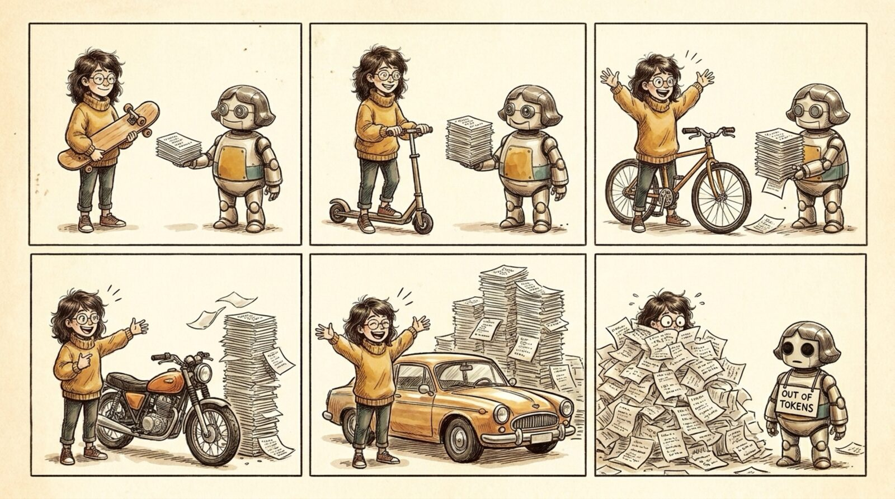

<section id="r05" data-transition="fade" style="background:#F5EEE0;color:#222222;font-family:Arial, Helvetica, sans-serif;padding:0;display:flex;flex-direction:column">

<aside>A generative FEEDBACK LOOP. Maya's idea keeps growing and Robo-Maya keeps producing a bigger pile of code to review -- until Maya is buried and the agent runs OUT OF TOKENS. Cheap to generate means the idea AND the review burden balloon, so verification must be cheap.</aside>
</section>
